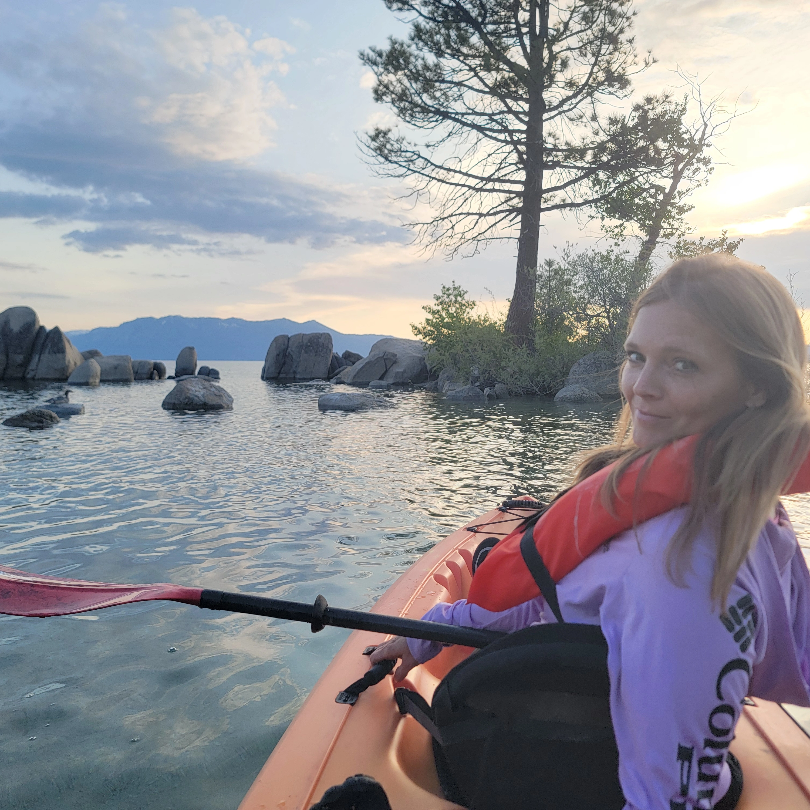
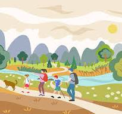

Karee Graf
About Me
Hello! My name is Karee Graf. I live in Pioche Nevada. I am a mother of 5 amazing kids. Being a mother is my greatest joy. I enjoy staying active and being in nature. I also love learning new skills that help me grow professionally.


Living in Pioche allows me to enjoy beautiful scenery and nature every day. I love hiking, mountain biking, being outside, and appreciating the peaceful environment that rural Nevada offers.